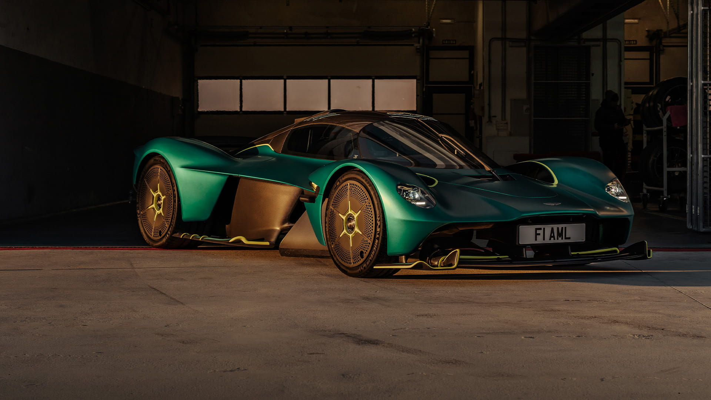
GAYDON · RED BULL ADVANCED TECHNOLOGIES
VALKYRIE
A road hypercar conceived with Formula 1 aerodynamic methodology
Cosworth 6.5-litre naturally aspirated V12, redline 11,100 rpm; 1,160 PS hybrid output; the Silverstone production-car record at 1:56.42.
NebulaProject Origins
The brief was settled in 2014: Adrian Newey with Red Bull and Aston Martin agreed to design a road-legal hypercar by the aerodynamic methods of Formula 1.
Codenamed AM-RB 001, revealed at Gaydon in July 2016 and named Valkyrie at Geneva in March 2017; first dynamic testing at Silverstone, with Max Verstappen and Alexander Albon driving.
Commissioned
The brief agreed by four parties; initial volumes planned in double digits.
Reveal
AM-RB 001 full-size model shown at Gaydon.
Named
Valkyrie named at the Geneva Motor Show.
Powertrain fixed
Official confirmation: 1,160 bhp combined @ 10,500 rpm.
Production
November 2021 to December 2024; 275 cars.
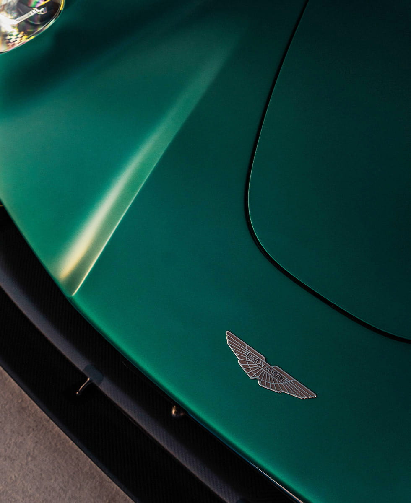
The wings
Wipac supplies all lighting, badge included.
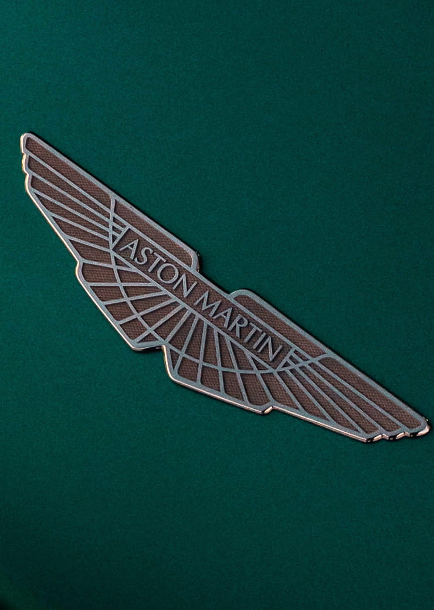
Badge macro
Aluminium base, hand-finished.
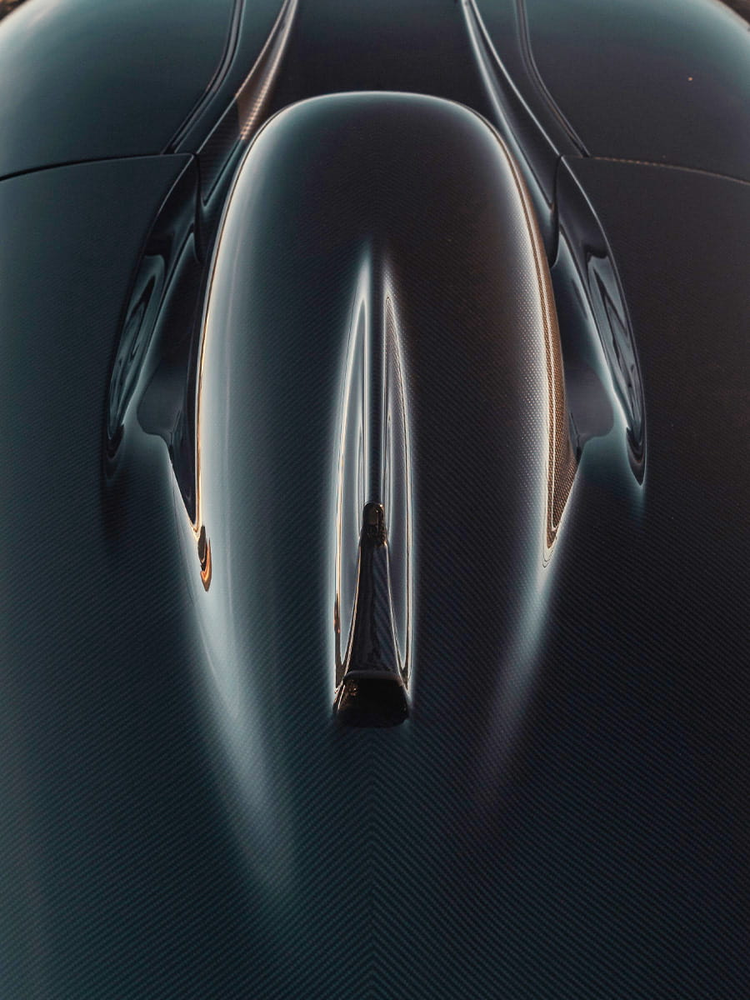
Full carbon body
Carbon skin over aluminium inserts; Multimatic monocoque.
"The green painted surfaces of that model are effectively Aston… while the black surfaces of canopy, rear wing and everything below the waistline are ours."
AeroAerodynamics
Aerodynamics and thermal management were planned together from the first sketch. Scroll for the reason behind every aperture.
The floor does the work
An open underbody and Venturi tunnels form the ground-effect core. Downforce reaches 18 kN at speed — about 1,800 kg.
Cameras for mirrors
External mirrors are deleted; the side cameras feed the cabin's screen array, resolving drag and visibility together.
Exhaust through the roof
The same layout as a contemporary Formula 1 car or the Porsche 918 Spyder; rear bodywork and cooling follow from it.
The 8 mm negotiation
Chief designer Miles Nurnberger argued eight millimetres of extra cabin at one review — and the engineering team stood to applaud.
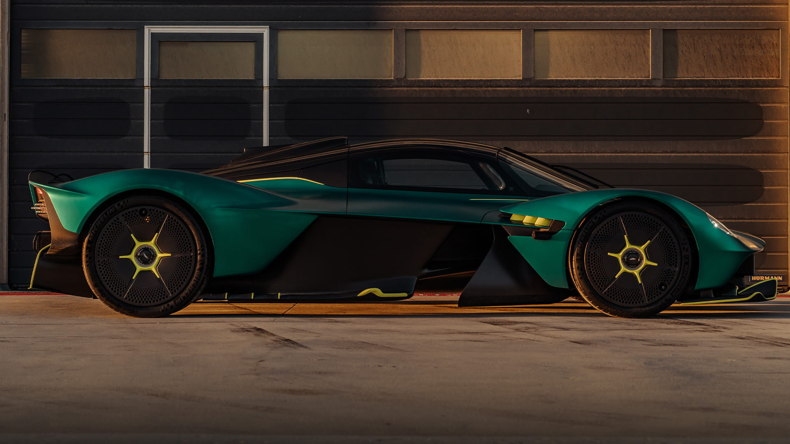
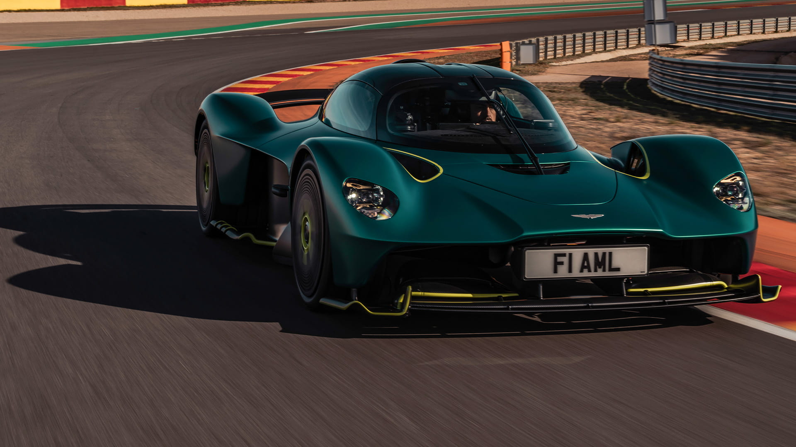
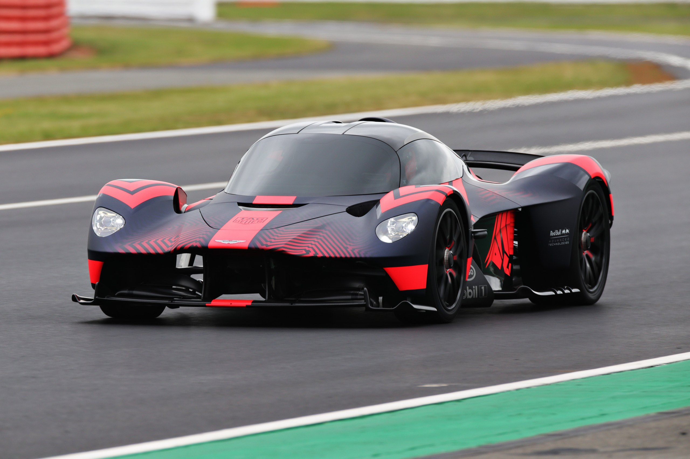
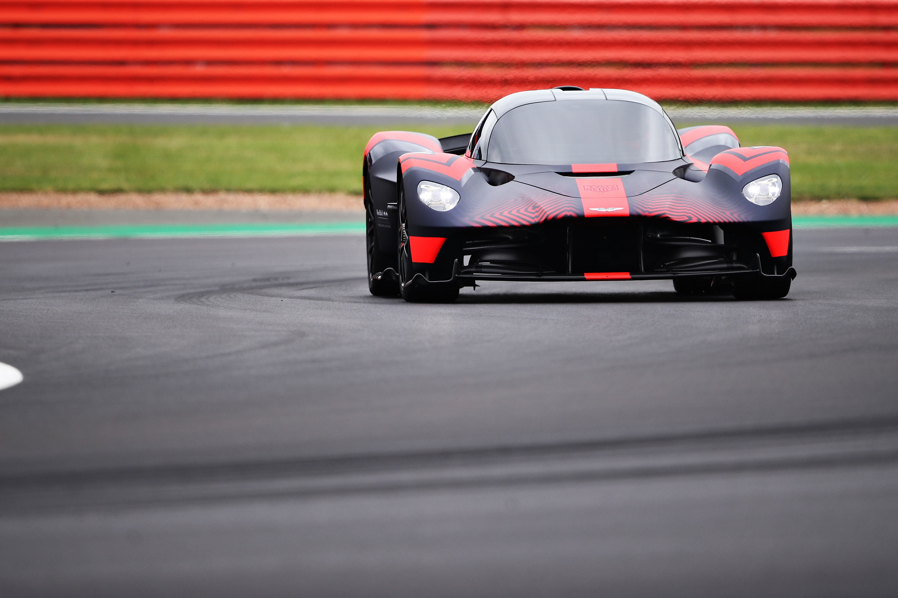
V12The V12
A Cosworth-built 6.5-litre naturally aspirated V12. No turbocharging. Redline 11,100 rpm.
The engine alone delivers 1,001 bhp at 10,500 rpm and revs to 11,100 — the ceiling for a naturally aspirated production road engine. Idle: 1,200 rpm.
The hybrid side is deliberately light: a Rimac 1.3 kWh KERS battery and an Integral Powertraction 160 hp axial-flux motor between engine and gearbox. Combined: 1,160 PS at 10,500 rpm, 900 N·m at 6,000 rpm. Reverse is performed by the motor — the Ricardo seven-speed single-clutch sequential has no reverse gear.
The engine weighs 206 kg dry and is a fully stressed chassis member, requiring no subframe; Cosworth designed it to run 50,000 miles between rebuilds.
Engine redlinehighest of any NA production car
Combined output@ 10,500 rpm
Combined torque@ 6,000 rpm
0–100 km/htop speed 220 mph
An acoustic record
From the Bahrain test: the camshaft gears work inches behind the occupants' heads; a 1,000 rpm idle was logged by testers as "savagely loud", and above 4,000 rpm with the windows down there is a genuine hearing-damage risk — active noise-cancelling headphones are the official recommendation. The external soundtrack, by the agreement of all three outlets, is the part of this car most worth recording.
- EngineAM-Cosworth RA · 6.5L 65° V12
- ValvetrainAll-aluminium DOHC · 48 valves
- GearboxRicardo 7-speed single-clutch AMT
- ElectronicsBosch ECU / TCS / ESP
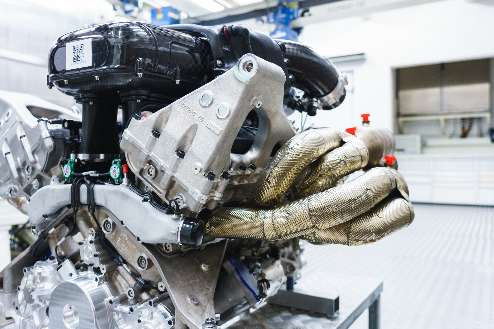
1,001 bhp
Carbon intake plenum, gold-lagged manifolds, aluminium block; 206 kg dry.
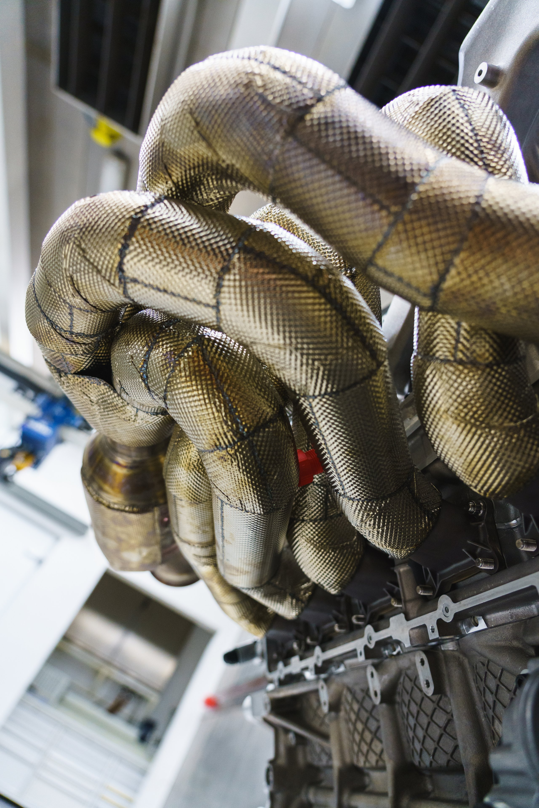
Heat lagging
Gold woven lagging on the exhaust manifolds — hand work at Cosworth.
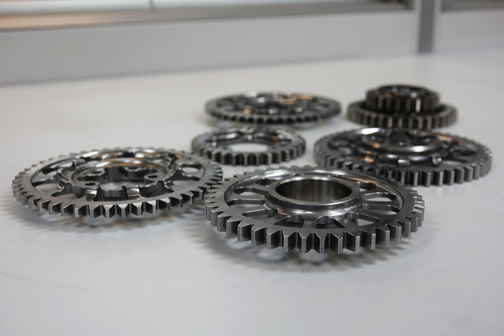
Timing gears
CNC-machined; running inches behind the occupants' heads.
DetailsDetails
The factory filmed the parts of this car built to be examined: badge, tail-lights, carbon wiper, G-meter and hydraulics.
The light blade
The brake-light blade across the tail — the tour of details begins here.
A cabin without an instrument cluster
Display is handled by an array of screens: ahead of the wheel, at the centre, and at both camera-mirror positions. The bucket seats are 3D-scanned to each owner; the steering wheel removes for access.
- DisplayScreen array, no cluster
- Seats3D-scanned carbon buckets
- WheelRemovable
- MirrorsCameras + screens
Badge
The wings, kept lit by Wipac.
Carbon wiper
A single carbon-fibre blade arm.
Doors and active systems
The hydraulic units for the gullwing doors and active chassis. For the Spider, the active aerodynamics and active chassis were recalibrated for open-top running.
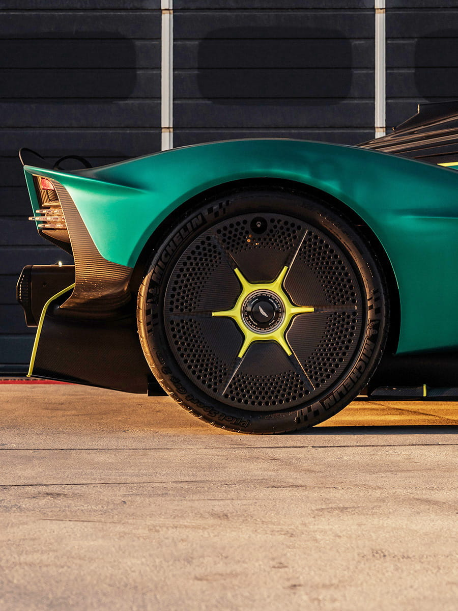
Wheel · MagnesiumMagnesium wheels, Cup 2 tyres
Magnesium wheels — 20-inch front, 21-inch rear, centre-lock. Michelin Pilot Sport Cup 2, 265/35-ZR20 front and 325/30-ZR21 rear; the grippier Cup 2 R optional, both road-legal. Braking by Alcon and Surface Transforms CCM-R ceramics, 420 mm front and 385 mm rear discs, six-piston calipers.
- Front265/35-ZR20 · 20-in magnesium
- Rear325/30-ZR21 · centre-lock
- Discs420 mm F / 385 mm R · 6-piston
FamilyThe Family
Four forms of one technical brief: 150 Coupés, 85 Spiders, 40 AMR Pros, 10 LMs.
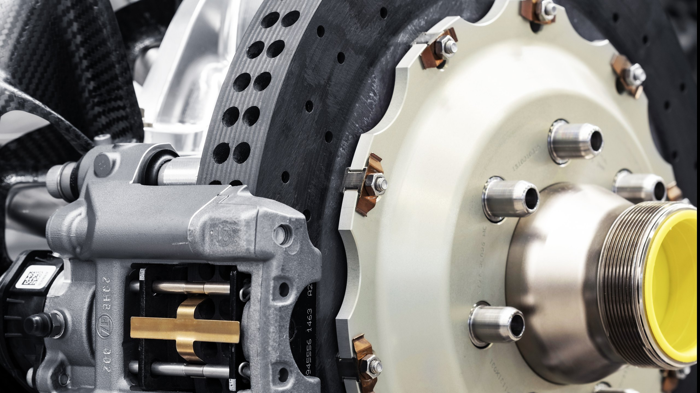
First Customer Car · GaydonValkyrieCoupé · 2021–2024
The base form. Production ran from November 2021 to December 2024: 150 cars, all delivered, at roughly $3M each. The first customer car belongs to Fernando Alonso.
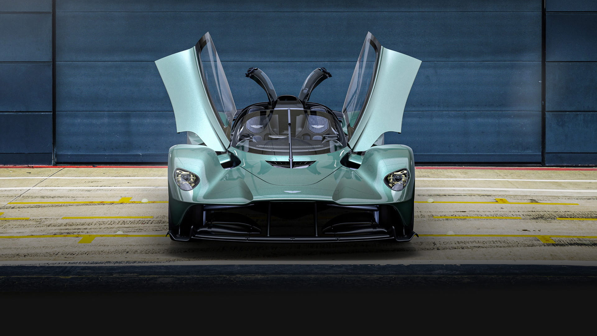
Valkyrie SpiderValkyrie SpiderRoadster · from 2022
The carbon roof panels remove; gullwings give way to front-hinged butterfly doors. The carbon structure was reinforced for open-top running, with the active aerodynamics and active chassis recalibrated; the powertrain is unchanged. Allocation was twice oversubscribed — 85 cars.
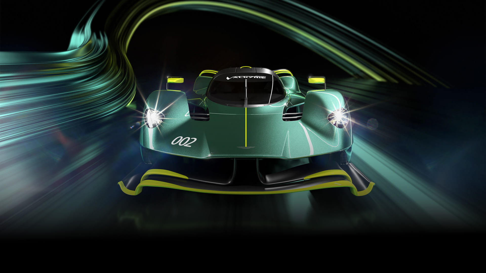
Valkyrie AMR ProValkyrie AMR ProTrack-only · not road legal
KERS deleted, the V12 alone remains — around 1,100 hp, redlining at 11,000 rpm. Eighteen-inch wheels carry Michelin LMP1-spec tyres; braking is F1-style carbon-carbon; air conditioning and infotainment are removed. Twice the road car's downforce, 3.3 G lateral, 3.5 G under braking. Demonstration laps at the 2022 Bahrain F1 season opener; production raised from 25 to 40 cars, sold out.
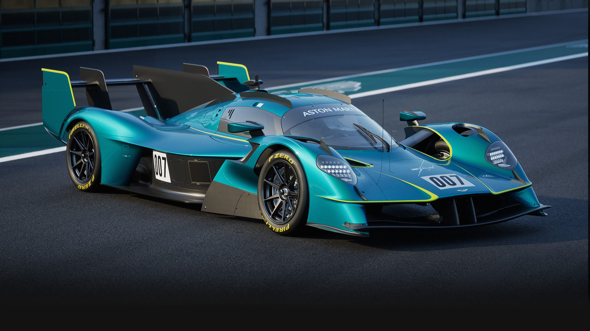
Valkyrie LMValkyrie LMCustomer racer · announced June 2025
The customer racer built to mark the return to Le Mans, based on the AMR Pro and hardened for endurance racing: the same Cosworth lean-burn V12, capped at 520 kW (697 bhp) by regulation, redline 8,400 rpm. Regulation ballast and mandated electronics removed, the FIA tank enlarged, pump fuel accepted. Ten cars, each with the "Unleashed" programme of engineer-supported track days.
"The Valkyrie LM is close to identical to the race car that is currently competing in WEC and IMSA, with only a few minor deviations to ensure it is a non-homologated variant and is accessible for customers to experience."
"Aston Martin Valkyrie AMR Pro is a project beyond compare, a true 'no rules' track-only version."
RecordThe Record
The first road-legal production car under two minutes — on road-legal Michelin Cup 2 tyres.
Silverstone GP Circuit · Production Car Lap Record
1:56.42
Darren Turner · Michelin Pilot Sport Cup 2 · ~200 mph down Hangar Straight
The previous record — a Manthey-prepared Porsche 911 GT2 RS — stood at 2:06.82.
The Valkyrie took more than ten seconds off it.
For scale: a Lamborghini Huracán GT3 Evo on slicks manages 1:58.165; a Formula Renault 2.0 single-seater does 1:56.052, just 0.37 s quicker; an F1 car, 1:27.097. The track that day still carried rubber from a bike meeting, with visible damp patches.
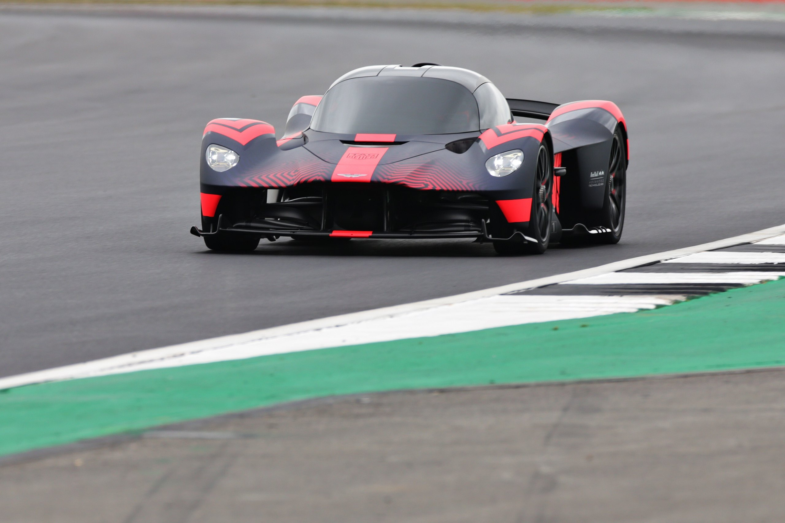
SilverstoneDarren Turner
"The car performed brilliantly. I'm not sure I had anything more to give, but maybe on a day that was kinder with the conditions we could find a few more tenths if not more."
"It blows my mind that this is a road-legal car that you can use to drive to Silverstone and then go faster than the pole lap record in the British GT championship."
— Darren Turner, former Formula 1 test driver and Le Mans winner. As reported by Road & Track.
Le MansLe Mans
In 2025 the Valkyrie returned to Le Mans as the AMR-LMH — the first V12 prototype in top-class endurance racing in 14 years.
The team is The Heart of Racing: #007 and #009 in WEC, #23 in IMSA — numbers inherited from the Le Mans-winning DBR9s.
The AMR-LMH is rebuilt from the AMR Pro to regulations: the 6.5-litre Cosworth RA in lean-burn tune, hybrid hardware removed, output capped at 500 kW; an Xtrac seven-speed sequential; starting, generation and reverse combined in one starternator. Michelin slicks, 29/71-18 front and 34/71-18 rear.
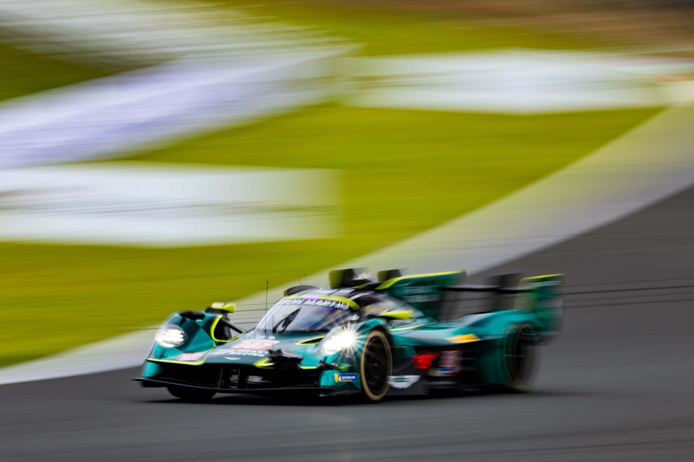
Debut in Qatar, finish at Le Mans
Global race debut at the 2025 Qatar 1812 km; that year's 24 Hours of Le Mans ended with both cars home, no mechanical failures — "We've arrived, we're present, we finished."
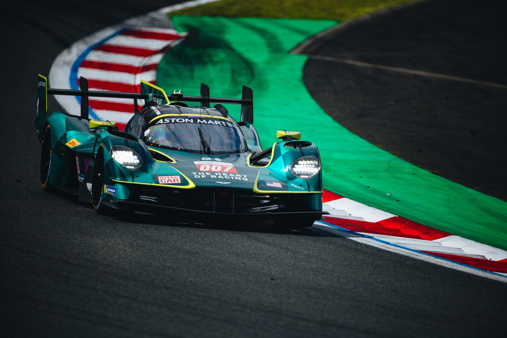
Numbers from the DBR9
#007 and #009 continue the numbering of the Le Mans-winning DBR9s. The first V12 prototype in the top class since 2011.
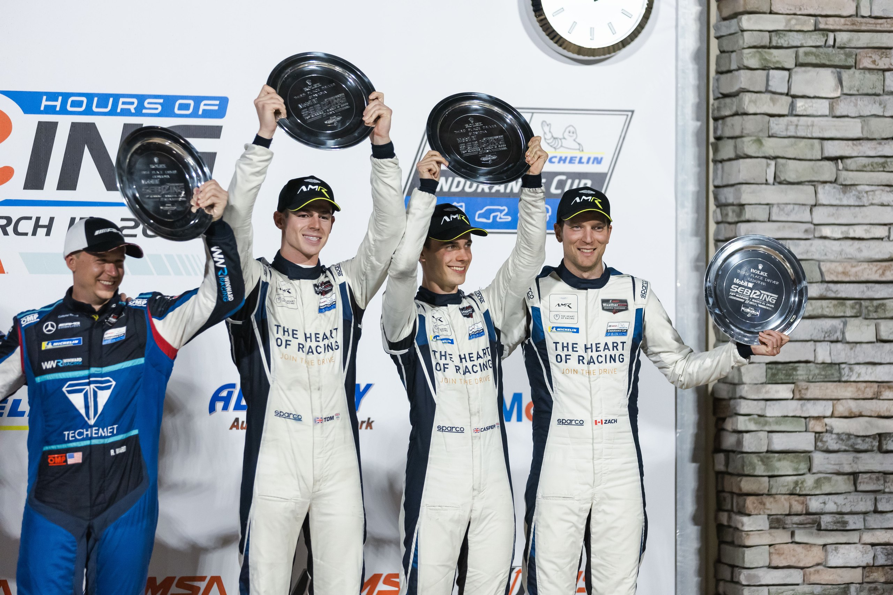
Top tens, and a podium
A run of top-ten finishes across the 2025 IMSA season and third on the grid at the Fuji 6 Hours; second overall at Petit Le Mans, five seconds behind the winning Cadillac — the first podium.
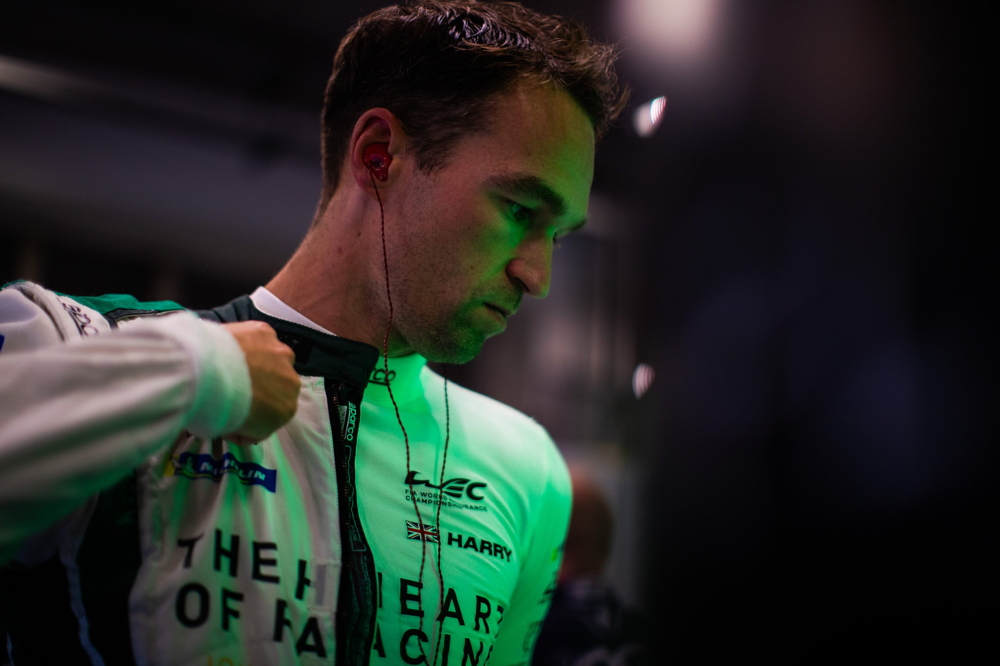
WEC line-up
#007: Tincknell / Gamble. #009: Riberas / Sørensen. IMSA #23: Gunn / De Angelis.
SpecsSpecifications
Four variants in full. Sources: official model pages and releases, Wikipedia.
Data notes: combined output follows the official March 2019 release (1,160 bhp @ 10,500 rpm); the website hero panel quotes 1,155 PS; MotorTrend's tested figure is 1,139 hp @ 10,600 rpm. 1 PS ≈ 0.986 hp. Sources: astonmartin.com model pages, media.astonmartin.com releases, Wikipedia, three published reviews (checked August 2026).
Aston Martin · Gaydon
A road car built as a racing car
"It's hard to put into words how much I have been looking forward to this day… Valkyrie truly is an F1 car for the road, with so much of the knowledge and technology taken from our F1 programme."
Two conclusions, side by side. Autocar: "undoubtedly the most extreme factory-built car to legally wear numberplates." MotorTrend's closing line: had the budget allowed, "in a heartbeat".